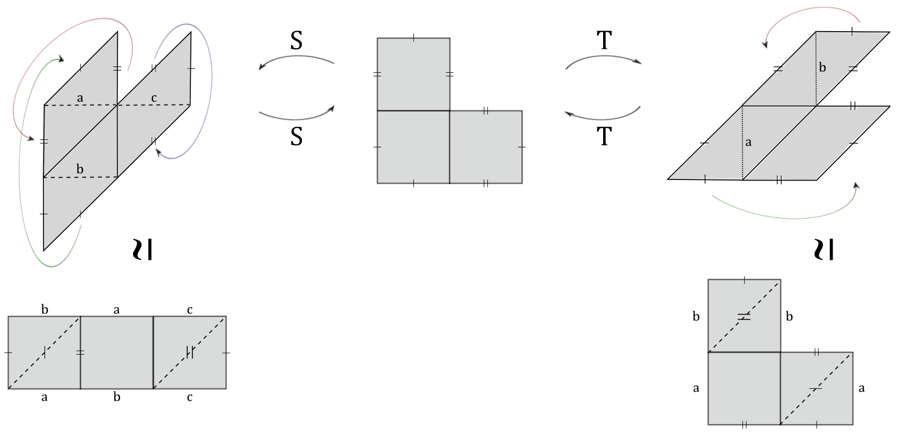

Estimating the Size of Forni Subspace
Advisor: Paul Apisa
 The research builds on the theories of Giovanni Forni and a upcoming conference by the American Institute of Mathematics at Caltech in Pasadena. Forni subspace is a fundamental invariant reflecting the deviation of ergodic averages. Our study aims to estimate the size of the Forni subspace for given translation surfaces, with a primary focus on a specific class of translation surfaces known as square-tiled surfaces (STS). We start by addressing two specific problems involving the Veech group and translation surfaces. Our strategy involves developing an algorithm that inputs a translation surface and outputs its Veech group. By leveraging Teichmüller geodesic disks and the analysis of moduli spaces, we will write code in SageMath to determine the dimension of the Forni subspace. Our research will comprehensively analyze all translation surfaces with a specific Forni subspace dimension, particularly focusing on surfaces with up to 20 squares. This analysis will identify patterns emerge and the fianl goal is to identify patterns and determine if a positive-dimensional Forni subspace exists.